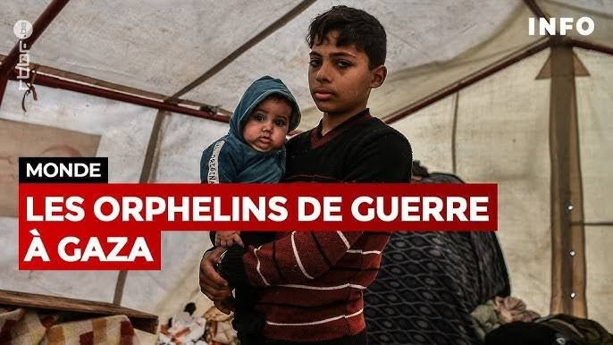

En cette journée du 06 janvier : journée mondiale des orphelins de guerre, une pensée particulière en hommage aux enfants de Gaza victimes de l'hydre sioniste.
Enfants de la guerre
Sous un ciel gris, des regards perdus,
Des âmes blessées, des rêves enfouis.
Enfants de la guerre, fleurs fanées trop tôt,
Arrachés à la vie, à l'amour, au flot.
Innocents visages, marqués par le deuil,
Portant le poids d'un monde cruel.
Privés de leur enfance, de leur joie pure,
Ils errent seuls, dans une nuit obscure.
Les bombes ont tout détruit, leurs rires aussi,
Ne laissant que des larmes, un cri strident et perçant.
Ils sont les oubliés, les invisibles,
Les victimes innocentes d'un monde terrible.
Mais dans leurs yeux, brille encore un espoir,
Une lueur fragile, comme une petite étoile.
Ensemble, levons-nous, tendons la main,
Pour que ces enfants puissent sourire demain.
Djamel Metref
At Yenni le 6 janvier 2025

← Tous les poèmes